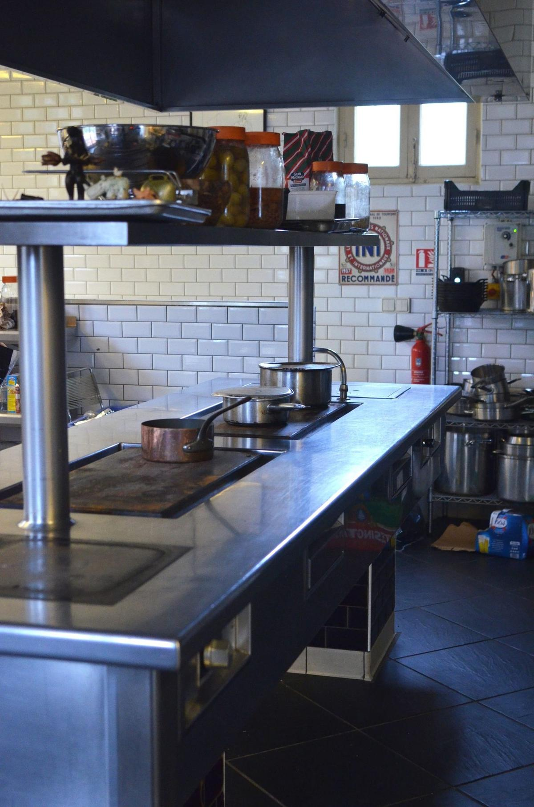

Trop petite, la chambre froide bloque la circulation d'air et met la chaîne du froid en danger ; trop grande, elle plombe le budget d'achat et la facture d'électricité pendant des années. Le bon dimensionnement se calcule en 10 minutes à partir d'une donnée que vous connaissez déjà : votre volume de marchandise au pic de stock. Voici la méthode, les volumes conseillés métier par métier et les erreurs qui coûtent cher.
Faire valider mon dimensionnement gratuitement

Le bon repère n'est pas le stock moyen mais le stock maximal, juste après une livraison et avant un week-end chargé. Comptez en caisses, bacs et cartons, puis convertissez : une caisse standard fait environ 0,04 m³, un rolls de livraison environ 0,5 m³.
Une chambre froide n'est pas un conteneur plein : il faut des étagères, une allée de circulation et surtout de l'air qui circule autour des produits pour garantir une température homogène. Le volume utile représente 40 à 50 % du volume total.
Si vous prévoyez d'augmenter les couverts ou d'élargir la carte d'ici 2-3 ans, dimensionnez sur l'activité cible, pas l'activité actuelle. Agrandir une chambre froide après coup coûte bien plus cher que quelques m³ pris dès le départ.
Exemple : un restaurant qui reçoit 2 livraisons par semaine et stocke 3 m³ de frais au pic → 3 × 2,2 ≈ une chambre froide positive de 6 à 8 m³. Un raccourci utile : comptez environ 0,1 à 0,15 m³ de froid positif par couvert servi quotidiennement, à moduler selon la fréquence de vos livraisons.
Ordres de grandeur constatés pour 2 à 3 livraisons par semaine. Votre installateur affinera selon votre carte et votre organisation.
| Activité | Froid positif conseillé | Froid négatif conseillé | Budget matériel indicatif HT |
|---|---|---|---|
| Snack / food-truck / petite restauration | 4 – 6 m³ | Congélateur armoire souvent suffisant | 2 500 – 4 000 € |
| Restaurant ~50 couverts/jour | 6 – 9 m³ | 3 – 5 m³ selon la carte | 3 500 – 6 500 € (+ négative le cas échéant) |
| Restaurant ~150 couverts/jour | 12 – 20 m³ (souvent sur mesure) | 6 – 10 m³ | Sur devis — au-delà des gammes standard |
| Boulangerie-pâtisserie | 4 – 8 m³ | 4 – 6 m³ (surgelés, crèmes, pousse contrôlée) | 7 000 – 13 000 € les deux volumes |
| Boucherie-charcuterie | 8 – 12 m³ (rails et crochets) | 4 – 6 m³ si congélation | 6 000 – 12 000 € |
Ces budgets correspondent aux fourchettes détaillées de notre guide des prix chambre froide 2026. Pour choisir entre les deux familles de froid, voyez nos pages chambre froide positive (0 à +10 °C) et chambre froide négative (-18 à -25 °C). Au-delà de 12 m³ ou pour un local contraint, direction le sur mesure.
C'est l'erreur numéro un. La chambre doit absorber le pic — veille de week-end, période de fêtes, livraison groupée. Une chambre pleine à craquer trois jours par semaine est une chambre mal dimensionnée, et un risque sanitaire au regard des normes de la chaîne du froid.
Des produits collés aux parois ou empilés jusqu'au plafond bloquent le flux d'air de l'évaporateur : certaines zones remontent en température sans que rien ne l'indique de l'extérieur. Gardez 10 cm autour des parois et environ 40 % du volume libre.
Chaque m³ superflu se paie deux fois : à l'achat, puis chaque mois en électricité — le froid alimentaire tourne 24 h/24. Refroidir 4 m³ de vide pendant 10 ans, c'est un surcoût réel et permanent, détaillé dans notre guide consommation électrique d'une chambre froide.
Un volume théorique parfait ne sert à rien si la chambre ne passe pas la porte du labo ou condamne un poste de travail. Vérifiez hauteur sous plafond, largeur des accès, emplacement du groupe et dégagement de la porte avant de figer le format.
Bonne nouvelle : le prix au m³ baisse avec la taille. Mauvaise nouvelle : la consommation, elle, suit le volume toute la vie de l'équipement.
Une positive compacte de 4-6 m³ coûte 2 500 à 4 000 € HT, soit 550 à 700 €/m³. Une standard de 6-12 m³ coûte 3 500 à 6 500 € HT, soit plutôt 450 à 600 €/m³. Prendre 2 m³ de marge raisonnable est donc peu coûteux — c'est le surdimensionnement massif qui ruine le calcul. Et si le budget bloque, la location ou le leasing lisse l'investissement à partir de 80 € HT/mois.
Plus de volume, c'est plus de parois qui échangent avec l'extérieur et plus d'air à refroidir à chaque ouverture de porte. En négatif, l'écart de température avec le local amplifie encore le phénomène. Un dimensionnement juste, des panneaux épais et des joints en bon état restent les trois meilleurs leviers d'économie sur la durée.
Décrivez votre activité en 2 minutes : un spécialiste du froid de votre région confirme le bon volume et vous chiffre le projet sous 24 h. Gratuit et sans engagement.